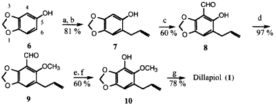
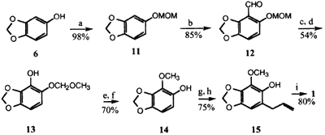
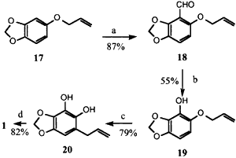
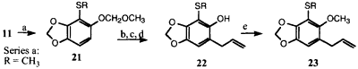

Abstract
Three syntheses of the natural synergist dillapiol from the natural, commercially available sesamol as starting material, are described. A major difference between these is the order of introduction of the additional methoxy and allyl substituents. In one of the syntheses, a formyl group is introduced at C4 via an electrophilic aromatic substitution reaction and then converted into the methoxy group using a Baeyer-Villiger reaction and subsequent methylation; in the other two, a directed ortho-metalation, Baeyer-Villiger, methylation sequence was employed. Various intermediates along the synthetic route were used to generate more than 30 analogs, including the 4-thiomethyldillapiol, to investigate the structure activity relationships of the pesticide synergism of these compounds.
Introduction
During the past few years we have been involved in a project aimed at developing natural insecticides1. Part of this includes the use of the naturally occurring synergist dillapiol (1). Dillapiol is a member of a group of both natural and synthetic synergists known as polysubstrate mono-oxygenase inhibitors (PMSO) whose key structural unit is a benzene ring bearing a methylenedioxy unit2. Examples of natural lignans with known synergistic activity, in addition to the dillapiol, are myristicin (2) and safrole (3).
Dillapiol is a monolignan and a major constituent of the essential oils of a number of plants, including Indian dill (Antheum graveolus)3 [sic], and Piper aduncum4, a species in the Piperaceae family. The latter grows as a small shrub in many tropical areas such as Central America, the West Indies, and Southeast Asia. The development of dillapiol for commercial purposes requires either an inexpensive reliable natural source or a viable synthetic source. Additionally for registration purposes both the toxicity to nontarget species and pharmacokinetics including the nature of the metabolites need to be known. The latter studies can be carried out best with isotopically labeled material.
Three syntheses of dillapiol have previously been reported. 3,4,5-Trimethoxyacetophenone5, 2-hydroxy-3- methoxybenzaldehyde (o-vanillin)6, and 1,2,3-trimethoxybenzene7 were used as starting materials. These syntheses required 5-7 steps and occurred in 2, 10, and 6% yield, respectively.
Discussion of results
Scheme 1
Reagents: (a) K2CO3, CH2=CHCH2Br; (b) N,N-dimethylaniline (180�C);
(c) (CH2O)n-SnCl4-Bu3N; (d) CH3I-K2CO3; (e) MCPBA-CHCl3 (18 h, 0�C);
(f) LiOH-THF-H2O; (g) CH3I-K2CO3-acetone.
Three syntheses have been completed starting with sesamol (6). These are shown in Schemes 1-3. In the first synthesis, Scheme 1, sesamol (6)* was converted to the ortho-allylated phenol 7 in 81% overall yield via O-allylation, followed by a Claisen rearrangement. Introduction of the formyl group into the 4 position in 7 was accomplished by treatment with formaldehyde, SnCl4, and tributylamine8 to afford 8 in 60% isolated yield. Replacement of tributylamine by other tertiary amines such as triethyl- or trioctylamine either reduces or did not improve the yield of 8. The variation of other reaction parameters such as temperature and reaction time also did not result in yield improvements.
This compound was quantitatively methylated to 9 in preparation for the Baeyer-Villiger and subsequent hydrolysis of the formate ester to form 10. The conversion of 9 to 10 was carried out using 1 equiv. of MCPBA in CHCl3 at 0�C for 18 h and afforded the formyl intermediate in 71% isolated yield, saponification of which gave 10. Under these conditions competition by the alkene moiety for the peracid to give an epoxide was minor; at room temperature the rates of desired Baeyer-Villiger and the epoxidation were quite comparable. Finally, methylation of 10 with CH3I-K2CO3 in acetone afforded pure dillapiol.
The overall yield of dillapiol from sesamol via Scheme 1, based on the isolated yields of each intermediate, is more than 21%. The major shortcomings of this route are the rather stringent conditions required for the introduction of the formyl group and the problem of the competing epoxidation of the terminal double bond during the Baeyer-Villiger reaction of 9. These difficulties became more severe on attempted scale-up.
Scheme 2
Reagents: (a) MOM-Cl, n-BuLi; (b) n-BuLi, THF, (-78�C), then DMF; (c) MCPBA;
(d) 10% KOH; (e) K2CO3 and CH3I; (f) CH3CO2H, NaI; (g) K2CO3,
CH2=CHCH2Br; (h) N,N-dimethylaniline (180�C); (i) K2CO3 and CH3I
Considerable effort was expended to avoid the sensitive reactions and shorten the synthesis by going directly from 7 to the resorcinol 20 and hence to dillapiol. Direct o-hydroxylation of 7 using H2O2-AlCl3 according to Kurz and Johnson9 or by use of oxygen and copper metal in the presence of CuCl2 as developed by Capdevielle and Maumy10 was unsuccessful and gave mainly recovered 7. In the second synthesis, Scheme 2, the MOM-protected sesamol 11 was o-metallated11 and treated with DMF to produce the aldehyde 12 in 85% yield. The protection of phenol as a THP derivative, thus avoiding the rather expensive MOM-chloride, was not possible since reaction of 6 with dihydropyran in the presence of acid resulted in the introduction of the THP unit at C6 via an electrophile aromatic substitution to afford 16 rather than the desired phenol protection.
Baeyer-Villiger oxidation followed by basic hydrolysis afforded phenol 13 which was methylated to give 14. Removal of the MOM group set the stage for alkylation and subsequent Claisen rearrangement to afford phenol 15, methylation of which gave dillapiol 1. The overall yield of dillapiol via Scheme 2 was 19%. After this synthesis was completed we realized that one might be able to avoid the protection-deprotection sequence if ortho-directed metallation and subsequent introduction of the formyl group could be carried out on the allyl ether 17 to give 18. The conversion of 18 to dillapiol would require first a Baeyer-Villiger reaction and hydrolysis to the resorcinol 19 and then double methylation to dillapiol. Such a sequence would save three steps from the synthesis shown in Scheme 2.
Scheme 3
Reagents: (a) nBuLi, THF, (-78�C), then DMF;
(b) MCPBA (25�C), then KOH; (c) N,N-dimethylaniline
(180�C); (d) CH3I, K2CO3, acetone.
We were concerned that 17 would undergo a 1,2-Wittig rearrangement rather than the directed ortho-metallation. Fortunately, this fear was unfounded and reaction of 17 with 1 equiv. of n-BuLi followed addition of DMF gave 18 in 87% isolated yield. Conversion to 19 was successful upon stirring with MCPBA at 0�C for 24 h. The reduced nucleophilicity of the double bond in 18 relative to 9 allows the Baeyer-Villiger reaction to proceed without competition from the epoxidation of the allyl ether. The intermediate formate ester was hydrolyzed to 19 without purification. Claisen rearrangement of 19 at 190�C afforded the resorcinol 20 which was methylated to dillapiol. The overall yield of dillapiol from sesamol via Scheme 3 is 31%.
Synthesis of dillapiol analogues
Several of the intermediates in Schemes 1 and 2 were suitable for the preparation of dillapiol analogues. For example, ortho-metallation of the MOM-protected sesamol 11, followed by treatment with dimethyl disulfide afforded the S-methyl derivative 21 in 91% yield. This compound was converted via 22a into the 3-thiomethyl analog of dillapiol 23a in four steps in 48% overall yield.
Scheme 4
Reagents: (a) n-BuLi, THF, (-78�C), then RSSR; (b) HCl-MeOH-NaI;
(c) allyl bromide - K2CO3 - acetone; (d) N,N-dimethylaniline (180�C);
(e) CH3I-K2CO3-acetone
Surprisingly, reaction of the ortho-lithiated allyl ether with dimethyl disulfide was not nearly as efficient as reaction with DMF and afforded only about 55% of the desired product. In addition, a significant amount of a by-product which was difficult to separate from the desired product was obtained. The by-product has not been identified and this route to sulfur analogues of dillapiol was not pursued further.
*) The numbering used throughout this paper is based on the IUPAC numbering of the 1,3-benzodioxole ring system. See structure 6, Scheme 1.
Experimental
General comments
Solvents used in reactions were distilled prior to use. n-BuLi was purchased from Aldrich as a hexane solution and titrated [diphenylacetic acid] prior to use. Usual work-up refers to partitioning of the reaction mixture between an organic solvent such as ether, ethyl acetate, or dichloromethane and water or 5% NH4Cl solution, drying of the organic phase with anhydrous MgSO4, and evaporating the solvents at reduced pressure. Yields, unless indicated otherwise, refer to chromatographically pure fractions.
5-Hydroxy-6-(2-propenyl)-1,3-benzodioxole (7)
This compound was prepared in 81% overall yield following the procedure of Grubbs et al.13 Melting point 74-76�C (lit.13 mp 74-76�C).
4-Formyl-5-hydroxy-6-(2-propenyl)-1,3-benzodioxole (8)
Paraformaldehyde (0.56 g, 18.5 mmol) was added to toluene (5.6 mL) containing 1.5 g (8.4 mmol) of 7, 0.1 mL (0.84 mmol) of tin tetrachloride, and 0.8 mL (3.37 mmol) of tri-n-butylamine. The resulting yellow solution was heated 8 h at 100�C, then cooled, acidified with 2 N HCl to pH 2, and extracted with ether. Purification by silica gel chromatography (1:1, hexane:CH2Cl2) afforded 1.05 g (60%) of 8 as a bright yellow solid, mp 68-70�C.
4-Formyl-5-methoxy-6-(2-propenyl)-1,3-benzodioxole (9)
Potassium carbonate (1.31 g, 9.45 mmol) and methyl iodide (3.92 mL, 63.0 mmol) were added sequentially to a solution of aldehyde 8 (1.30 g, 6.30 mmol) in acetone (10 mL). The resulting solution was allowed to stir at rt for 48 h, after which time the solvent was evaporated under reduced pressure. The remaining K2CO3 was dissolved in water and the aqueous phase extracted with ether (3x15 mL). Chromatography (5:1, hexane:EtOAc) of the crude product gave 1.35 g (97%) of 9 as a pale yellow solid, mp 101-102�C.
4-Hydroxy-5-methoxy-6-(2-propenyl)-1,3-benzodioxole (10)
To a cooled (0�C) solution of aldehyde 9 (210 mg, 0.95 mmol) in dry CHCl3 (6 mL) was added in one portion MCPBA (0.30 g, 0.95 mmol, 55%). After 18 h, the reaction mixture was allowed to reach rt and washed with sodium sulfite (sat., 2x10 mL), sodium bicarbonate (sat., 1x10 mL), and water (1x10 mL). The extract was dried over Na2SO4, filtered and evaporated to dryness. The resulting oily residue was purified by flash chromatography (3:1, Hexane:EtOAc) to give the formyl derivative of 10 as a colorless oil (160 mg, 71%).
To a solution of the above formyl derivative (250 mg, 1.06 mmol) in THF (9 mL) was added 1 mL of a 3N NaOH solution. The resulting homogeneous solution was stirred at rt for 1 h and diluted with brine. Usual work-up gave 10 (180 mg, 82%) as a pale yellow solid, mp 61-63�C.
4,5-Dimethoxy-6-(2-propenyl)-1,3-benzodioxole) (Dillapiol) (1)
A mixture of 10 (100 mg, 0.48 mmol), CH3I (0.28 mL), and K2CO3 (0.1 g) was stirred at rt for 72 h. The solvent was evaporated. Usual work-up afforded, after chromatography (5:1, hexane:EtOAc), 80 mg (78%) of dillapiol. The physical and spectroscopic properties were identical to those of the commercial material.
5-(Methoxymethoxy)-1,3-benzodioxole (11)
To a solution of sesamol (5.0 g, 36.2 mmol) in 20 mL of dry THF at 0�C was added 1 equiv. of n-BuLi (16.5 mL, 2.2 M). The reaction mixture was stirred for 30 min and then 1.5 equiv. of chloromethyl methyl ether (4.4 g, 4.1 mL) was added. The resulting mixture was stirred at rt for 24 h and then quenched with 10 mL of saturated NH4Cl. The usual workup gave 6.5 g (98%) of 11 as a colorless liquid. The product was used as such.
4-Formyl-5-(methoxymethoxy)-1,3-benzodioxole (12)
n-BuLi (12.5 mL, 2.2 M) was added to a solution of 5.0 g (27.5 mmol) of 11 in dry THF (20 mL) at 0�C. The reaction mixture was stirred for 30 min and 1.5 equiv. of DMF (3.00 g, 3.18 mL) was added. The resulting mixture was stirred at room temperature for 4 h and quenched with 10 mL of NH4Cl solution. Work-up gave the crude product as an orange powder. Purification by flash column chromatography (3:1, hexane:ethyl acetate) gave 12 as pale yellow crystals (4.9 g, 85%), mp 85-87�C.
4-Hydroxy-5-(methoxymethoxy)-1,3-benzodioxole (13)
MCPBA (5.30 g, 30.7 mmol) was added in one portion to a solution of aldehyde 12 (3.00g, 14.3 mmol) in dry CHCl3 (25 mL) at 0�C. The reaction mixture was warmed up to rt and stirred for 24 h, washed with sodium sulfite solution (sat., 2x15 mL), sodium bicarbonate (sat., 2x20 mL), and water (2x20 mL). The extract was dried over anhyd. MgSO4, filtered, and evaporated to dryness. The resulting oily residue was purified by flash column chromatography (5:1, hexane:ethyl acetate) affording the expected formate ester as a pale yellow liquid (2.76 g, 91%).
To the above compound (20 mg, 0.94 mmol) in 5 mL of THF was added 25% NaOH solution (2 mL). The reaction mixture was stirred for 4 h at rt and extracted with water (4x5 mL). The resulting oily residue, obtained after usual work-up was purified using flash chromatography (9:1, hexane:ethyl acetate). Phenol 13 was obtained as a pale yellow liquid, (11 mg, 59%).
5-Hydroxy-4-methoxy-1,3-benzodioxole (14)
Phenol 13 (4.9 g, 24.7 mmol) was O-methylated following the procedure for formation of 9. The yield of 4-methoxy-5-methoxymethyl-1,3-benzodioxole, a pale yellow liquid, was 5.05 g, (96%).
The above compound (4.86 g, 22.9 mmol) in acetone (15 mL) containing 5.15 g, (34.3 mmol) of NaI was stirred for 30 min. 3N Methanolic HCl (40 mL) was added and the resulting reaction mixture stirred for 4 h. Most of the solvent was evaporated and the crude residue dissolved in water (10 mL). The aqueous phase was extracted with ether (3x15 mL) and the combined organic extracts were then washed with 10% NaOH solution (3x15 mL). The combined aqueous phase was acidified using conc. HCl and extracted with ether (3x20 mL). Further work-up afforded 2.81 g (73%) of 14 as pale orange crystals, mp 53-55�C.
5-Hydroxy-4-methoxy-6-(2-propenyl)-1,3-benzodioxole (15)
A solution of 14 (2.55 g, 15.2 mmol), allyl bromide (2.0 mL, 23 mmol), and anhyd. K2CO3 (3.15 g, 23 mmol) in acetone (15 mL) was refluxed for 30 h. The solvent was removed under reduced pressure and the crude residue was dissolved in 20 mL water and 10 mL of 10% NaOH solution. Further work-up gave 5-O-allyl-4-methoxy-1,3-benzodioxole as a yellow liquid (2.72 g, 86%).
A solution of the above allyl ether (460 mg, 2.0 mmol) in 5 mL N,N-dimethylaniline was heated at 190�C for 2.5 h. The solution was cooled, diluted with 7 mL of ether, and washed several times with 10% NaOH solution. The alkaline extract was acidified with conc. HCl and extracted with ether (3x15 mL). The crude residue obtained after work-up was purified by flash column chromatography (9:1, hexane:ethyl acetate) to give 15 as pale yellowish liquid (400 mg, 87%).
4,5-Dimethoxy-6-(2-propenyl)-1,3-benzodioxole (1)
The phenol 15 (140 mg, 0.70 mmol), K2CO3 (140 mg, 0.10 mmol), and 0.50 mL (0.8 mmol) of MeI was reacted in 5 mL of acetone as with 9. Work-up and chromatography gave 130 mg (80%) of 1.
5-Allyloxy-4-formyl-1,3-benzodioxole (18)
To a solution of compound 17 (0.3 g, 1.68 mmol) in anhyd. THF (5 mL), n-BuLi (1.35 mL, 2.01 mmol, 1.5 molar solution in hexane) was added dropwise at 78�C. The resulting yellow solution was allowed to stir for 45 min and then N,N-dimethylformamide (0.26 mL, 3.37 mmol) was added. After 30 min, the reaction mixture was quenched with sat. NH4Cl solution and extracted with ether. Flash column chromatography of the crude ether extracts using ethyl acetate:hexane (1:5) furnished the aldehyde 18 (302 mg, 87%) as a yellow solid, mp 98-100�C.
5-Allyloxy-4-hydroxy-1,3-benzodioxole (19)
To a solution of aldehyde 18 (0.3 g, 1.45 mmol) in dry chloroform (5 mL) at 0�C, was added in one portion MCPBA (0.61 g, 1.74 mmol, 50%). The resulting mixture was stirred at 0�C for 24 h. The mixture was diluted with chloroform (20 mL) and was washed with sat. sodium sulfite (1x15 mL), sat. sodium bicarbonate solution (1x15 mL) and water (1x15 mL). The crude formate ester (0.25 g, 78%) was obtained as an oil and used for the next reaction without any further purification.
To a solution of the ester (0.25 g, 1.13 mmol) in THF (5 mL), was added 1 mL of a 3 N NaOH solution. The resulting homogeneous solution was stirred at rt for 1 h and was extracted with water (4x10 mL). The aqueous phase was then acidified with 2 N HCl and was extracted with CH2Cl2 (3x20 mL). Further work-up afforded an oily residue. Purification by silica gel flash column chromatography using ethyl acetate-hexane (1:5) as eluent gave 19 (0.15 g, 70%) as a yellow liquid.
4,5-Dihydroxy-6-(2-propenyl)-1,3-benzodioxole (20)
A solution of 19 (0.15 g, 0.77 mmol) in N,N-dimethylaniline (2 mL) was heated at 190�C for 1 h and then was allowed to cool to rt The reaction mixture was extracted into ethyl acetate and was washed with 1 N HCl solution (3x10 mL), brine (2x10 mL), followed by water (10 mL). The crude rearranged product was purified via silica gel flash chromatography using ethyl acetate-hexane (3:7) as eluent to yield 20 (0.12 g, 79%) as a brown syrup.
4,5-Dimethoxy-6-(2-propenyl)-1,3-benzodioxole (1)
To a solution of 20 (0.02 g, 0.103 mmol) in acetone (3 mL), was added sequentially potassium carbonate (28 mg, 0.21 mmol), and methyl iodide (0.10 mL, 0.206 mmol). The resulting reaction mixture was allowed to stirred at rt for 60 h. Solvent was removed under reduced pressure. The crude product obtained after the usual work-up was purified by silica gel flash column chromatography using ethyl acetate-hexane (1:5) as eluent to furnish the dillapiol (1) (18 mg, 82%) as a yellow liquid.
Reaction of 11 with disulfides, General procedure
n-BuLi (1 equiv.) was added to 1 equiv. of 11 in THF at 0�C. After 30 min, 1.5 equiv. of disulfide was added and the solution was stirred for 1 h. Further work-up followed by silica gel chromatography afforded the desired 4-thio derivatives.
4-Methylthio-5-methoxymethoxy-1,3-benzodioxole (21a)
This reaction was carried out starting with 5.0 g (27.5 mmol) of 11. The yield of 21a, a pale yellow liquid, was 5.70 g (91%).
Removal of the MOM group, General procedure
Each MOM derivative 21 was dissolved in a mixture of acetone and 3 N methanolic HCl containing NaI. The mixture was stirred for about 4 h and most of the solvent was removed under reduced pressure. The residue was partitioned between ether and 10% NaOH solution. The basic extracts were acidified and re-extracted with ether. The crude products obtained after further work-up were purified by recrystallization or chromatography.
5-Hydroxy-4-methylthio-1,3-benzodioxole
From 4.0 g of 21a and 3.94 g of NaI in 15 mL of acetone and 40 mL of 3 N methanolic HCl was obtained 2.65 g (80%) of the title compound as a white powder, mp 51-53�C.
Allylation of the 4-thio-5-hydroxy derivatives, General procedure
The above phenols were dissolved in acetone containing about 10-20% excess of anhydrous potassium carbonate. The mixture was refluxed for up to 24 h. The solvent was evaporated under reduced pressure and the residue was partitioned between ether and 10% NaOH solution. Further processing of the ether phase gave the desired product.
5-Allyoxy-4-methylthio-1,3-benzodioxole
From 1.89 g of 5-hydroxy derivative, series a, 2.13 g of potassium carbonate and 0.90 mL of allyl bromide in 15 mL acetone was obtained after 23 h of reflux, 2.03 g (88%) of the desired product as a clear liquid.
Claisen rearrangement of the 5-allyl ethers General procedure
The 5-allyl ethers obtained as described above were dissolved in a small quantity of N,N-dimethylaniline and heated to 190�C for 1-3 h. The cooled reaction mixture was diluted with ether and extracted with 10% NaOH solution. The combined basic extracts were acidified and extracted with ether. Further work-up and purification yielded the desired Claisen rearrangement products.
5-Hydroxy-4-methylthio-6-(2-propenyl)-1,3-benzodioxole (22a)
Allyl ether, series a (1.0 g, 4.0 mmol) when heated in 5 mL of N,N-dimethylaniline (5 mL) at 190�C for 2.5 h, gave 0.87 g (87%) of 22a as a colourless liquid.
5-Methoxy-4-methylthio-6-(2-propenyl)-1,3-benzodioxole (23a)
Phenol 22a (400 mg, 1.8 mmol), was converted in 87% yield (372 mg) to 23a in the same manner as the conversion 8 to 9.